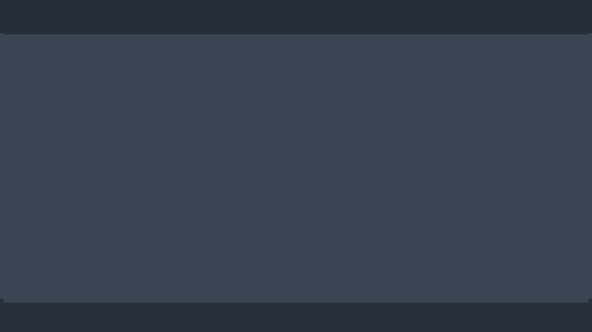
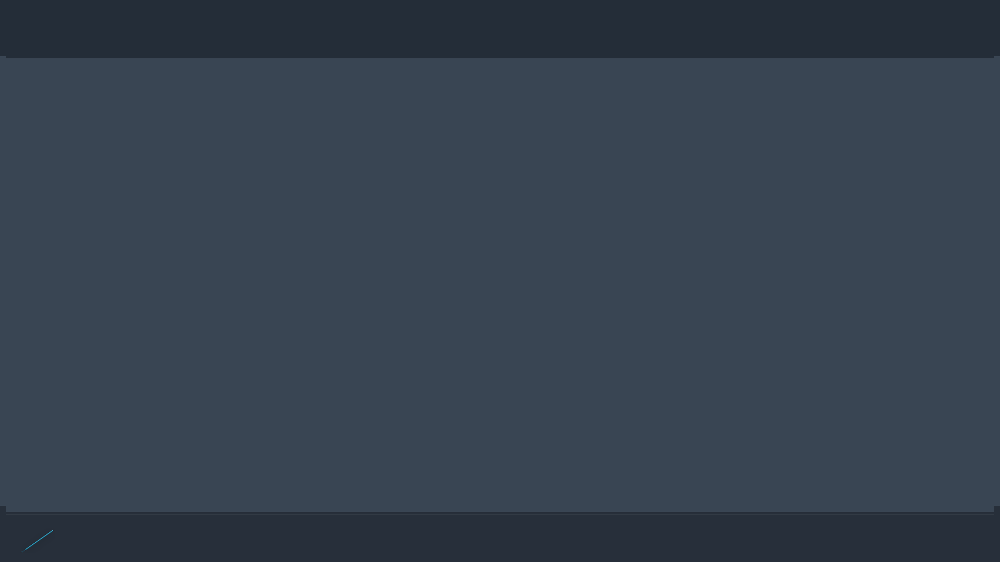
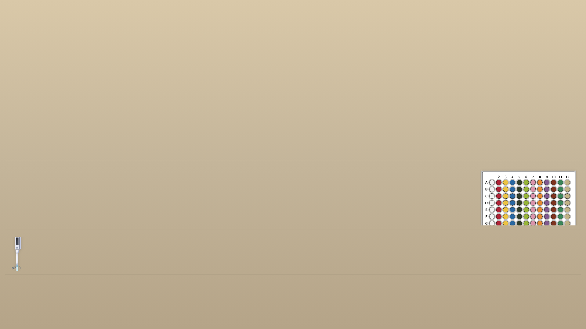
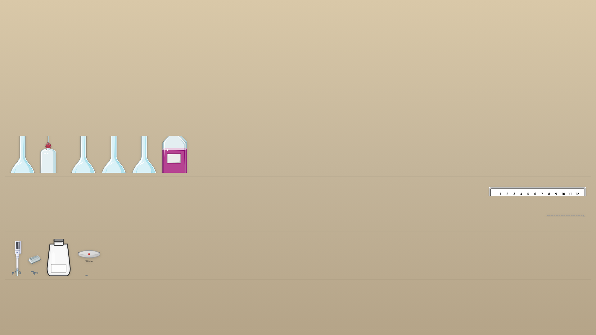
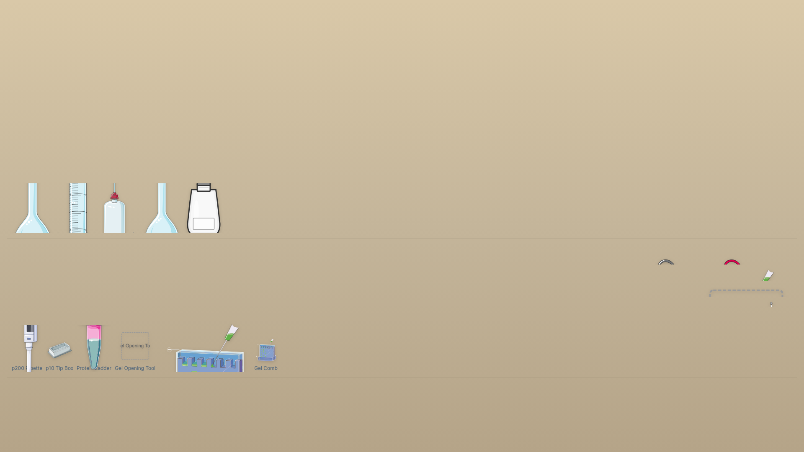

1. Best static scenes (Lane A gallery)
Top static layouts produced by the CSS-native engine. Curated set covering core scene types and density extremes.








2. Runtime proof (Lane B)
Evidence that the CSS-native layout survives a live click interaction, not just a static render.

{kind=link}
{kind=link}
{kind=link}
{kind=link}
{kind=link}
{kind=link}
3. Diagnostics (Lane C)
Diagnostic notes on layout edges, failure modes, and probe results.
4. Scorecard (Lane D)
Quantitative scorecard rating the CSS-native approach across scene types.
5. Visual style directions (Lane H)
Three rendered style directions exploring the visual range of the same layout.
{kind=link}
{kind=link}
{kind=link}
6. Future demos (Lane J)
Notes on future demos that would extend or validate this approach further.
7. Failure museum (Lane M)
Curated record of failure modes encountered during the investigation. Wave 2 lane.
8. Concept demos (Lane N)
Speculative concept demos exploring extensions of the CSS-native approach. Wave 2 lane.
9. Reviewer guide (Lane R2)
Suggested reading order and decision pointers for reviewers of the evidence package. Wave 2 lane.
10. Pipeline diagram (Lane I)
End-to-end pipeline diagram showing how YAML, layout engine, and rendered output connect.
{kind=link}